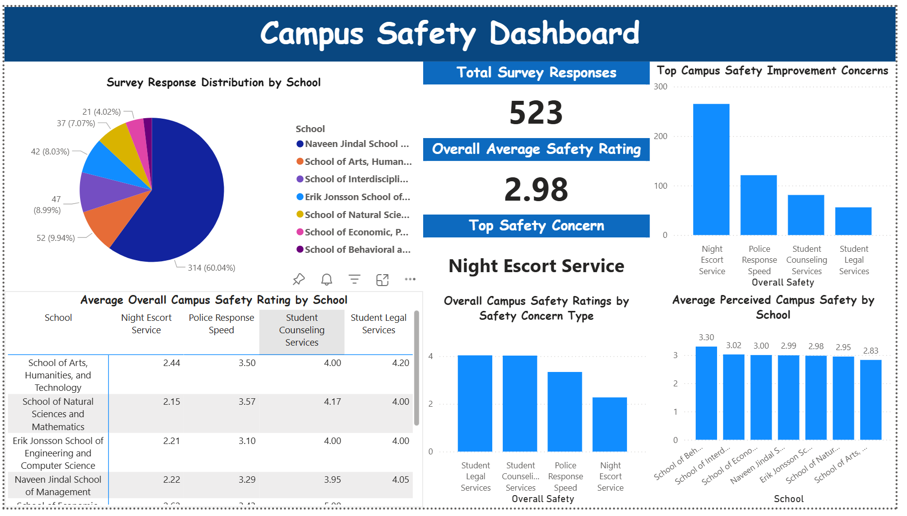

Campus Safety Optimization
From Cloud Integration to Actionable Insights: Optimizing Campus Response Efficiency
📌 Project Executive Summary
Driven by the growing safety concerns regarding nighttime campus mobility, a critical issue given the inherent risks of urban environments after dark.
Our team set out to optimize the university’s Night Escort Service.
Leveraging my role as a Microsoft Student Ambassador, I guided the integration of Microsoft’s technology stack to transform over 500+ stakeholder records into a proactive safety ecosystem. By identifying significant operational gaps in manpower and real-time monitoring, we architected a cloud-based solution that bridges Azure Infrastructure for GPS tracking with Microsoft Teams for live emergency response.
This collaborative effort utilizes Power BI Analytics to visualize resource gaps, ensuring a data-driven approach to student security and institutional peace of mind.
📊 Visual Insights & Workflow

1. Data Elicitation

To ensure the proposed solution addressed the actual needs of the campus community, our team executed a systematic data elicitation phase centered on a comprehensive stakeholder survey.
- Targeted Engagement: The survey successfully captured insights across seven colleges where the College of Business represented the primary data source with 314 individual records. This broad distribution ensures that our findings reflect a comprehensive cross-section of the campus community.
- Volume and Representation: This process successfully yielded over 520+ high-quality responses, providing a statistically significant foundation to identify systemic issues rather than isolated incidents.
- Granular Insight Capture: Beyond simple ratings, the elicitation was structured to capture specific pain points regarding nighttime mobility and service response times, which directly informed our technical requirements for Azure-based tracking.
- Defining the Scope: The results from this elicitation served as the “Single Source of Truth” for the project, allowing us to prioritize the Night Escort Service as our primary optimization target based on objective community feedback.
2. Strategic Concept - The Scalable Virtual Escort Ecosystem
- Bridging the Scalability Gap: We identified that the primary barrier to campus safety at UT Dallas is the “one-to-one” escort model, where demand far outpaces police supply. Our concept pivots to a “one-to-many” monitoring framework, allowing limited personnel to oversee multiple safety sessions simultaneously.
- Virtual Guarding via Microsoft Ecosystem: By leveraging Microsoft Teams as the primary user interface, we lowered the barrier to entry for students, while Azure serves as the analytical backbone to monitor routes, deviations, and travel times in real-time.
- Exception-Based Intervention: The core logic shifts from constant manual patrolling to proactive risk detection. The system only triggers high-priority Adaptive Card alerts to Campus Safety when Azure detects anomalies (e.g., route deviation or overdue arrival), ensuring that specialized manpower is deployed only when necessary.
- Data-Informed Security Strategy: Beyond immediate response, the integration of Power BI transforms individual “Safe Walks” into long-term strategic insights. This allows university leadership to identify high-risk zones and optimize campus infrastructure, such as improving lighting or adjusting patrol routes based on empirical evidence.
- Operational Efficiency & ROI: This virtual model significantly reduces the operational cost for the university while increasing student confidence, providing a high-impact safety solution without the need for additional physical headcount.
💡 Reflection & Future Scope
The Challenge
While the current prototype successfully validates the technical feasibility of a virtual escort system, two primary challenges were identified during the development and elicitation phases:
- Mitigating Data Bias: Our data elicitation primarily captured responses from the College of Business (60%), which may introduce a demographic bias. To ensure the system’s universal applicability, future iterations should involve targeted outreach to underrepresented schools to capture a more diverse range of nighttime mobility patterns.
- Infrastructure & Implementation Costs: Although our prototype leverages existing Microsoft 365 infrastructure, a full-scale deployment would involve ongoing Azure consumption costs (e.g., API calls for location tracking, data storage, and AI processing). Managing these recurring software expenses while maintaining high system availability is a primary operational challenge.
- Infrastructure & Implementation Costs: Beyond initial development, ensuring the system’s long-term reliability requires dedicated technical maintenance. This includes monitoring cloud service health, updating security protocols for data privacy, and managing the integration between Teams and Azure to prevent service downtime during critical nighttime hours.
Future Scope
To evolve “Safe Walk” from a pilot project to an enterprise-grade campus solution, the following enhancements are proposed:
- Predictive AI Analytics: Transitioning from “reactive” monitoring to “predictive” safety. By applying machine learning to historical safety data, the system could suggest safer, better-lit alternative routes in real-time before a student even starts their walk.
- IoT & Smart City Integration: Integrating with campus infrastructure, such as smart street lighting that brightens automatically when an active “Safe Walk” is detected via Azure, creating a physical “safety corridor” for the user.
- Universal Accessibility: Expanding the UI/UX within Teams to include voice-activated distress signals and multilingual support, ensuring that international students and those with disabilities can navigate the campus with equal confidence.